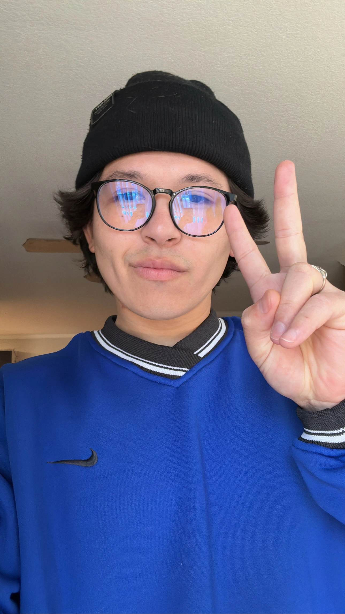
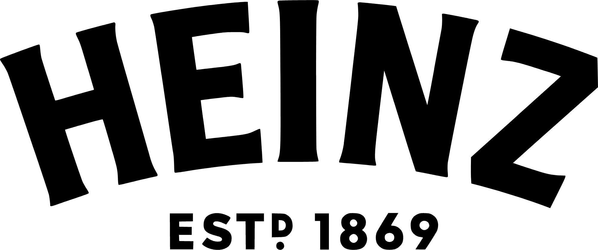

Imagination,backed byexpertise.
I’m Isaac — a creative technologist with deep agency experience and a tinkerer’s curiosity. I connect strategy, design, and technology to take ambitious ideas from the first conversation to the final detail.

NINOCreative thinking
Hands-on making
Creative judgment.
Technical depth.
I move between design, code, and emerging technology to make ideas tangible. Sometimes that means a desktop tool. Sometimes an AI experiment. Always something built around people.
Less friction. More possibility.
Local-first software and thoughtful workflows that make complex work easier to navigate.
Based in Colorado.
Built on curiosity.
Selected brand experience
Work created with teams at Subvrsive.

Proof of
curiosity.
Different problems. Different mediums.
The same drive to make something useful.
New work is on the way. In the meantime, explore my GitHub ↗.
Project details couldn’t load. Please refresh, or explore my GitHub ↗.
Make it thoughtful.Make it useful.Make it human.
I’m most interested in the space between what technology can do and what people actually need.
Have a
what if?
Let’s give it a shape.
A prototype. A product. A new possibility.